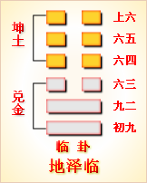

周易第十九卦 临 地泽临 坤上兑下
临：元，亨，利，贞。至于八月有凶。
彖曰：临，刚浸而长。说而顺，刚中而应，大亨以正，天之道也。至于八月有凶，消不久也。
象曰：泽上有地，临;君子以教思无穷，容保民无疆。
初九：咸临，贞吉。象曰：咸临 贞吉，志行正也。
九二：咸临，吉无不利。象曰：咸临，吉无不利;未顺命也。
六三：甘临，无攸利。既忧之，无咎。象曰：甘临，位不当也。既忧之，咎不长也。
六四：至临，无咎。象曰：至临无咎，位当也。
六五：知临，大君之宜，吉。象曰：大君之宜，行中之谓也。
上六：敦临，吉无咎。象曰：敦临之吉，志在内也。
临卦卦象，地泽临卦的象征意义
地泽临卦，是由兑和坤所组成，兑卦在下，坤卦在上。兑代表愉悦，象征泽;坤代表顺，象征地。地在上，泽在下，象征大地对泽水采取居高临下的监督。大地压在泽上，像上级对下级在施加压力，强制推行自己的意志。本卦取名为临，临的本意就是从上往下看，本卦的含义就是上级对下级的领导和管理。监临、面临，随着所临对象的不同，包含以君临民、以己临事多重含义，如何正确处理自我与他人、主体与客体的关系，是临卦所讨论的主题。《象》中这样解释临卦：泽上有地，临;君子以教思无穷，容保民无疆。
地泽临卦《象》中这段话的意思是：临卦的卦象是兑(泽)下坤(地)上，为地在泽上之表象。泽上有地，地居高而临下，象征督导。君子由此受到启发，费尽心思地教导人民，并以其无边无际的盛德保护人民。
地泽临卦以在地与泽水接壤通气为象，表明君与民和平相处，君亲近于民，民和悦于君。这一卦既有领导亲临下级，又有下级恭迎领导之意。临卦启示了教民保民的道理，属于中上卦。《象》中这样来断此卦：君王无道民倒悬，常想拨云见青天，幸逢明主施仁政，重又安居乐自然。
此卦卦名为临。“临”字是一个会意字。在金文中，右边是人，左上角像人的眼睛，左下角像众多的器物。整个字的形象是人俯视器物的样子。所以“临”的本义是从高处往低处察看。前面是蛊卦，是讲如何去除盛世中的淫邪与腐败，进行整治之后就没事了吗?不，君王还要经常巡视，观察社会的势态，以达到防患于未然的目的。所以蛊卦接下来便是临卦。
地泽临卦的卦画为下面两个阳爻，上面四个阴爻。
地泽临卦从卦象上分析，下面的两个阳爻代表阳气的逐渐增强，也可引申为正气的增长。临卦是十二消息卦之一，代表的节气为大寒。临卦六爻代表小寒至立春的三十余天。五天为一候，一爻代表一候。此时卦象上已有两个阳了，表示阳气逐渐在壮大。所以临卦也有壮大的意思。另外，临卦的上卦为坤为地，下卦为兑为泽，所以泽上有地便是临卦的卦象。什么叫“泽上有地”?意思是说，沼泽的外边是无边的土地，而土地的位置是高于沼泽的，所以说“泽上有地”。站在沼泽边上的土地上往沼泽里看，这就是临。可见卦象与卦名的含义还是较为一致的。
关键词：周易,临卦,地泽临,坤上兑下
临卦：大吉大利，占问得吉利。到了八月天旱，有凶兆。
初九：用感化改策治民，征兆吉利。
九二：用温和政策治民，吉利，没有什么不吉利。
六三：用钳制政策治民，没有什么好处。如果忧民之所忧，就没有灾祸。
六四：亲自处理国事，没有灾祸。
六五：用聪明睿智治民，是国君应该做到的。吉利。
上六：以敦厚诚实治民，吉利，没有灾祸。
①临是本卦标题。临的意思是从高处往下看和治理。全卦内容主要讲治民之术。临是卦中多见字，又与内容有关，所以用作标题。
②至于八月， 有凶：到了八月天旱，有凶兆。这里用天旱盼雨喻民盼治。
③咸：用作 “感”，意思是感化，这里指感化政策。
④咸：这里用作“诚”，意思是温和，指温和政策。
⑤甘：作用“钳”，意思是钳制，指钳制政策。
(6) 至临：亲自处理国事。
(7)知：智，明智。
(8)敦：敦厚诚实。